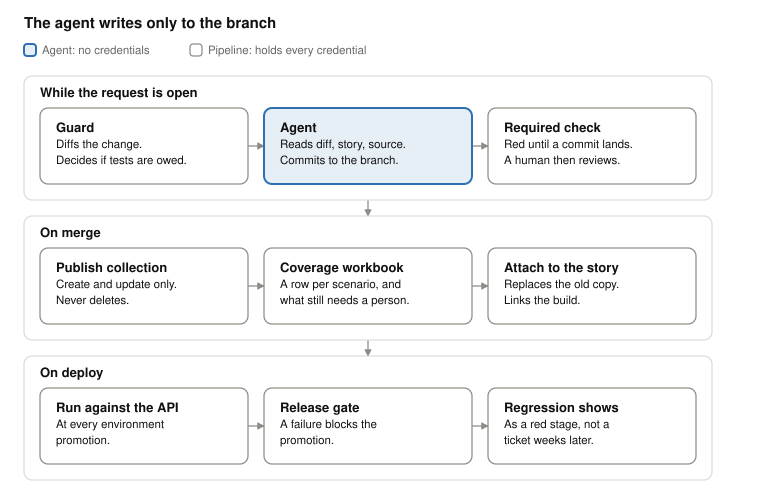

API tests are almost always written after the code they test. The gap is not a tooling problem and it is not a discipline problem. It is an ordering problem. This is a design for closing it: a pipeline gate that decides whether a change owes tests, an agent that writes them into the pull request while it is still open, and a commit contract that makes silence impossible.
The design has been implemented and run in production on a .NET API estate. This article describes the pattern, not that deployment.
The problem is ordering, not effort
The conventional sequence is: a developer changes an endpoint, the change is reviewed, it merges, it deploys, and some time later a QA engineer opens the diff, works out what changed, and writes tests for it.
Every expensive property of that sequence follows from its order.
The QA engineer has to reverse-engineer intent from a diff that has already shipped, which is the hardest possible moment to establish what the change was supposed to do. The author has moved on. The acceptance criteria have scrolled out of view. And because the tests are not blocking anything, they are the first thing dropped when the next sprint starts, so the work is not merely late, it is optional. A test suite that is optional and retrospective converges on being a regression archive for bugs that already escaped.
The fix is not to ask people to try harder. It is to move test authoring to the only point in the cycle where the intent, the diff, and a blocking review all exist at the same time: while the pull request is open.
Shape of the design
Three phases, each owned by a different actor.

While the PR is open. A guard step decides whether the change owes tests. If it does, an agent is invoked. The agent reads the diff, the linked story, and the existing test conventions, then commits test scripts to the PR branch. A required status check holds the merge until they are there.
On merge. The pipeline publishes the test collection to the API client's cloud workspace, generates a test case workbook, and attaches it to the linked story.
On deploy. The tests run against the deployed API at every environment promotion. A failure blocks the promotion.
The ownership split matters. The agent only ever writes files to a branch. The pipeline holds every credential and performs every privileged action. Humans make every judgement about whether the tests are any good.
Part 1: The guard
The guard answers one question: does this change owe tests?
Getting this wrong in one direction is cheap and in the other direction is expensive. A false positive costs one agent invocation that concludes nothing was needed. A false negative means behaviour ships with no test and nobody is told. So the guard is deliberately biased toward firing.
It works on two independent signals, and either one is sufficient.
Signal one: contract surface. Diff the PR against its target branch, restricted to source files and excluding test projects. Look for changes to route definitions, handler signatures, request and response shapes, validators, and status codes. This catches the obvious cases.
Signal two: reachability. Contract diffing alone misses the change that alters what an endpoint does without altering how it is called. So the guard also walks outward from handler definitions and marks a change as relevant if it lands within two hops: the service class a handler calls, a DTO, a validator, a mapper, a repository, a type from an internal shared library, or an options or settings type that a handler reads.
Two hops is a tuning decision, not a principle. One hop misses too much in a layered codebase. Three hops in a well-factored service tends to reach shared utility code, at which point every change fires the guard and the signal is gone.
Reachability is a practical approximation and not a proof of impact. How well it works depends on how plainly the codebase expresses its dependencies. Dependency injection, dynamic dispatch, reflection and generated code all produce edges that a static walk will not see, and in a codebase that leans on them the graph is incomplete by construction. The guard is built to reduce silent omissions, not to establish that every affected endpoint has been found. Treat a change it misses as expected behaviour rather than as a bug in the analysis, and keep the bias toward firing, which is what buys back some of what the graph cannot see.
Each detected change then gets a category, and only two of them produce work:
| Category | Meaning | Action |
|---|---|---|
| Added | New endpoint or new field on the contract | Author tests |
| Modified | Existing contract changed | Author or amend tests |
| Behaviour | Logic changed, contract did not | Conditional, see below |
| Removed | Endpoint or field deleted | Retire tests, do not author |
| Unchanged | Reached but semantically irrelevant | Skip |
The behaviour rule is the one worth copying. A logic change that does not touch the route, the body, the validators or the status code only earns a test if the new rule is observable in an HTTP response. If it is not observable, no test is written, and the run says so. The alternative is an agent inventing assertions about internal state it cannot see, which produces tests that pass for the wrong reason. Those are worse than no tests, because they consume review attention and then lie.
When the two signals disagree, reachability wins. Contract diffing says no and reachability says yes, the agent runs. These are two separate decisions made by two separate pieces of logic, and they can drift apart as the codebase changes. Resolving the tie toward running is what keeps drift from turning into silent gaps. It is worth being explicit that this drift is a standing design weakness rather than pretending the two signals are one.
Part 2: The agent
Once invoked, the agent reads four things.
The diff, for what changed. The linked story, found from the ticket key in the branch name, for what the change was supposed to do. The surrounding source, for the handler, its validators, its auth requirements and its data access. The existing test collection, for conventions it must match rather than invent.
Reading the story and not just the diff is the single highest-value decision in the design. Validation rules routinely exist only in acceptance criteria. A priority ordering, a tie-break rule, a threshold: these are stated in the ticket, implemented as a few lines of unremarkable code, and invisible to anything working from the diff alone. An agent that reads only the diff writes tests for the shape of the change. An agent that reads the story writes tests for the rule.
The case that made this concrete was a deduplication rule. The same record arrived from several upstream sources, and which source won was stated in the acceptance criteria and nowhere else. In the code it was a sort order: a few lines that read as an implementation detail and are in fact the entire business rule. A diff shows you the sort. Only the story tells you it is a precedence rule, and that getting it backwards means the wrong source wins silently.
The agent then makes nine decisions per endpoint. Each is read out of the code rather than templated, and getting any of them wrong produces a suite that fails for reasons that have nothing to do with the API.
They group by what the decision governs: whether an endpoint is tested at all, what the request looks like, and how it lands in a suite that already exists.
Scope: whether it is tested at all
1. Not everything is testable over HTTP. Timer, queue, event and orchestration triggers get no request at all. An endpoint that accepts work asynchronously gets the 202-plus-status-URL polling pattern, rather than a 200 that will never happen.
2. The production suite stays safe. Only reads that pass against always-present production data go into the production suite. Reads depending on seeded data are left out, and the reason is stated in the run report. Writes never go there at all.
Shape: what the request looks like
3. Auth follows the architecture. A bearer token, a function key header, or a signed-request scheme, picked from the attributes on the endpoint and inherited at folder level wherever the collection already does it that way.
4. Validators become negative tests. Declarative validation rules turn into missing-field and invalid-input cases that assert the real message. Where the message cannot be proven from the code, the test asserts the status and flags a TODO rather than guessing.
5. Write endpoints bring their own data. Create, capture the id, act on it, delete it. It reuses the collection's existing create and delete requests, so the suite stays runnable end to end instead of depending on a record somebody made last month.
Fit: how it lands in a suite that already exists
6. Execution order is a correctness problem. A new request goes before the folder's teardown, at the midpoint of the gap, and existing requests are never renumbered. Appended at the end it would run after the cleanup, against data that has just been deleted.
7. Variables are reused, never reinvented. Exact name and casing taken from the request, environment and collection variables that already exist. A second alias for a value the collection already holds is a defect, not a style choice.
8. Running it twice changes nothing. Endpoints the change did not touch stay byte-identical, so a second run on the same branch produces an empty diff. Endpoints it deleted have their test files removed and their emptied folders pruned.
9. Reviewable YAML, not escaped JSON. Below, because it is the decision that determines whether any of the other eight can be reviewed at all.
Two of these are worth lifting out. Decision 4 is the same instinct as the commit contract: where the agent cannot prove the expected message from the source, it marks the uncertainty in the test rather than inventing an assertion that looks authoritative. Decision 8 makes the step idempotent, which is what lets you re-run it on a branch without generating noise in the diff.
Write tests as source, not as payloads
Tests are committed as YAML using block scalars, with the script bodies readable as actual indented lines.
This is a formatting decision that determines whether the whole design works. The format I was migrating from, and the one a large installed base still exports, is JSON with scripts embedded as arrays of escaped strings. Committed to a repository, a generated test in that form produces a diff that no human will read, which means the human review step silently degrades into approval by assumption. Block scalars produce a diff where a reviewer sees the assertions as lines of code and can object to a specific one.
The scripts stay inside the collection rather than sitting in separate .js files, which would
buy editor support and linting, because the runner executes a collection and expects them there.
Splitting them would require a step that reassembles the collection before every run, and that
step is somewhere the file a reviewer approved and the file that actually executed can diverge.
An unreviewable generated test is not a reviewed test. The file format is what keeps a person in the loop.
The agent writes only inside the collection's test tree, only on the PR branch. It holds no credentials and performs no network action against any environment. It does not run the tests it writes.
Part 3: The commit contract
This is the core of the design and it is one rule.
A valid run always commits. Either the tests, or an empty commit whose message states why no tests were needed.
The required status check stays red until a commit from the agent lands at the branch tip. The design contains no path where nothing happens and the gate opens anyway.
The reason this matters is that every automated gate has a failure mode where absence is read as success. A step that posts a result when it has something to say and stays quiet otherwise cannot be distinguished from a step that is broken, misconfigured, not triggered, or silently erroring. Quiet is ambiguous, and ambiguity in a gate resolves toward merging.
Requiring an artifact in every case removes the ambiguity. If the agent thought about the change and concluded it owed nothing, that conclusion is a sentence in a commit message, visible in the PR, attributable, and reviewable. A reviewer can read "no tests added: the modified code path is not reachable from any endpoint" and disagree with it. That is a conversation. Silence is not a conversation.
It also converts the drift problem from Part 1 into something observable. If the guard fires and the agent then concludes nothing was needed, that pair of decisions contradicts itself and the contradiction is written down in the log. A disagreement you can count is a disagreement you can fix.
Why a commit specifically
The contract is that every qualifying run leaves a reviewable artifact. A commit is how I chose to carry it, and that is an implementation decision rather than the principle.
It earns its place for four reasons. The artifact appears where the reviewer already is, on the branch, in the diff, rather than in a build log nobody opens. It is attributable and timestamped without building anything to make it so. It is durable, surviving pipeline retention windows that build artifacts do not. And it plugs into the required-check model already enforcing the merge, so the gate needs no new concept to express "has the agent spoken yet".
A machine-readable decision record posted as a check annotation or a PR comment would satisfy the same contract. If you build this and your review culture lives somewhere other than the diff, use that instead. What must not change is that the run cannot end without saying something.
When the agent itself goes silent
A design claiming silence is impossible has to say what happens when the thing that was supposed to speak does not.
Model timeout, a failed push, a transient error: the run fails and the check stays red. It does not pass. The absence of a commit is treated as the agent having not yet spoken, which is exactly the state the gate exists to hold. This is the one place the bias toward firing has a cost, because a flaky invocation blocks a merge that may owe nothing, and the remedy is a re-run.
If the branch moves while the agent is working, the commit lands on a tip it did not read. Decision 8 is what contains this: because a second run is idempotent, re-running against the new tip either produces no diff or produces the delta the new commits imply. The agent does not attempt to merge, rebase or resolve anything.
The design provides no bypass of its own. There is no flag meaning skip the gate this time, and no state in which the agent being broken counts as a reason to proceed. What does exist, as it does for every required check, is administrative override at the repository level. It is worth being plain about that rather than claiming a guarantee the platform does not give.
The distinction that matters is between an override built into the gate and one that sits above it. An override inside the gate gets used, because it was designed to be used, and within a quarter it is part of the normal path. A platform-level override is attributable, lands in an audit log, and applies to every check in the repository rather than singling this one out as the skippable one. Live with the second. Never build the first.
Part 4: On merge
Once a human approves and the branch merges, a second pipeline runs. It is deliberately a separate pipeline with a separate switch, because publishing has side effects outside the repository and authoring does not.
Publish the collection. Push the committed tests to the API client's cloud workspace, keyed by a collection identifier pinned in pipeline configuration rather than looked up at runtime. The sync is create and update only. It never deletes. Environments, globals and stored secrets are not touched. A test publishing step with delete permission on a shared workspace is a step that will eventually destroy somebody's work.
Generate the test case workbook. The same source material produces a spreadsheet for whoever does the manual testing, with a row per scenario: the scenario name, the steps, the expected result, a link back to the story, and critically, a column stating whether that case is covered by an automated script or still needs a person.
That column is the part teams tend not to build, and it is the one that makes the artifact worth having. A QA engineer handed a generated suite has no way of knowing where its edges are. Handed a list where fourteen rows say automated and three say manual, they know exactly what their job is on this story. The automation stops being an opaque thing that may or may not have them covered.
Attach it to the story. Post the workbook to the linked ticket, replacing any earlier copy, with a comment linking the build that produced it. The pipeline also keeps it as a build artifact. Ticket integration is write-only for attachments and comments. The agent never changes ticket state, and no automated step moves a story through a workflow.
Part 5: On deploy
The published tests run against the deployed API at every environment promotion, driven by the API client's command line runner, with per-environment values supplied from pipeline variable groups rather than from anything committed.
A failure blocks the promotion. This is what makes the tests load-bearing rather than informational. Tests that report but cannot stop anything decay, because nothing breaks when they are wrong, so nobody fixes them.
The full loop is: tests are authored while the change is still reviewable, published when it merges, and executed against the running service in the same cycle. A regression surfaces as a red release stage rather than as a support ticket three weeks later.
That sentence describes the loop working, and it is worth being exact about what has to be true for it to hold. The behaviour has to have a test, the test has to carry an assertion that would actually fail, and the behaviour has to be observable in the environment the suite runs against. The gate guarantees the first of those. It does not guarantee the second or the third. A generated test can exist, be reviewed, be green, and be asserting nothing of consequence. Everything in this design is aimed at making that case visible to a reviewer rather than at making it impossible, because the only thing that catches a weak assertion is a person reading it.
Who decides what
The gate enforces existence. It does not assess quality. Nothing in this design approves anything.
- The guard decides whether tests are owed
- The agent proposes tests and must explain itself either way
- The reviewer reads the generated tests as a diff and accepts, comments, or rejects
- QA runs the suite, works the manual column of the workbook, and signs off
- The release gate blocks promotion on failure
Reviewer and QA are roles here, not necessarily two people. On a team with embedded QA they are usually the same person, and the two entries describe two moments rather than two headcount. What matters is that someone with test judgement reads the generated assertions before the merge, and that whoever owns the manual column knows the automated column was reviewed and not just generated. If the code reviewer is approving test diffs they do not feel qualified to assess, the design has moved the problem rather than solved it.
A wrong assertion in a generated test becomes a review comment on an open pull request. That is the cheapest place in the entire lifecycle for a wrong assertion to be found, and it is the reason this is worth doing at PR time specifically rather than anywhere else.
What it deliberately does not do
- It does not approve, merge, or release anything
- It does not change ticket state
- It does not delete from the shared collection, and does not touch environments or secrets
- It does not execute tests during authoring
- It does not assert on behaviour that is not observable over HTTP
- It does not read or move production data
- It does not run any model on your infrastructure. One authenticated outbound call per pull request, then polling the branch for a commit. No GPU, no model weights, no inference service to operate
That last point tends to matter more in review than the engineering does. There is no model-serving infrastructure to stand up, so the proposal is evaluated on whether the idea is sound rather than on what it costs to run. The costs that remain are the ordinary ones: API usage, pipeline minutes, a service identity to own the credentials, and somebody maintaining it.
Estimating the payback
Resist the single headline hours-saved number. It invites the one question it cannot survive, which is where the figure came from. The effects are on three different axes and only one of them is denominated in hours.
Define:
E= endpoint-affecting pull requests per monthh= engineer-hours to author tests for one such change by handv= engineer-hours to review a generated set insteads= share of those changes that currently receive no tests at all
Axis 1, time recovered. On the changes that were already being tested:
hours_per_year = E x (1 - s) x (h - v) x 12
Axis 2, coverage created. On the changes that were being skipped:
newly_covered_changes_per_year = E x s x 12
Do not convert this to hours. Nobody was spending hours there. The gain is that behaviour which previously shipped untested now ships tested, which is a risk reduction, and dressing it up as labour saved is where these estimates lose credibility.
Axis 3, latency. Time from merge to tests existing falls from days or weeks to minutes, and crucially to before the merge rather than after it. Report it as a distribution, not a mean.
A worked example with illustrative inputs, not measurements. At E = 20, h = 3.5, v = 0.5 and
s = 0.4:
| Axis | Result |
|---|---|
| Time recovered | 20 x 0.6 x 3.0 x 12 = 432 engineer-hours per year |
| Coverage created | 20 x 0.4 x 12 = 96 changes per year now tested that were not |
| Latency | days after merge, to minutes before it |
The input worth testing is v, because it is the one you control least and the one most likely to
be optimistic. At v = 0.5 the model returns 432 hours. At v = 1.5, which is what review costs
once a reviewer is genuinely reading assertions rather than skimming a diff, it returns 288. At
v = 2.5 it returns 144, and at v = 3.5 the design recovers nothing at all on this axis and is
justified entirely by axes 2 and 3.
That gradient is the finding, not any single row of it. Everything in this design that makes generated tests cheaper to review is load-bearing on the payback, which is why the file format is an architectural decision and not a preference.
Against that, the running cost is one agent invocation per qualifying pull request, so E x 12
invocations per year at whatever per-run cost your provider charges. For any plausible per-run
price this is the smallest term in the model by two orders of magnitude, which is the actual
finding. The cost question is not interesting. The review capacity question is.
Publish your inputs next to your outputs and let readers substitute their own.
Prior art, and what is new here
Most of this exists somewhere. It is worth naming where, precisely, because a vague prior-art section is worth less than none.
Generating tests with a model. Meta's TestGen-LLM improves existing human-written test classes and keeps only candidates that build, pass reliably, and raise coverage. It was deployed as a sweep over classes it was pointed at rather than against a diff, and a run that yields nothing yields nothing: no artifact, no record. Meta's later mutation-guided work targets specific fault classes instead of coverage.
Generating tests on a pull request. This is a product category. The closest published thing to
what I built is Qodo's qodo-cover playbook. It classifies changed files as logic-bearing or not,
builds a table of which ones need tests and why, runs a step headed "Decision gate", commits tests
to a branch, and posts a table of what it skipped. If it decides no tests are needed, it says so.
Anyone assessing this design should read that file first.
Deriving tests from the specification. Schemathesis and property-based API testing generate cases straight from an OpenAPI schema, with no model and no authored file, and the schema diff is the test diff. Where the contract is the whole requirement, that is the better tool and it costs less than this one. It does not reach rules the schema does not express. The precedence rule above is valid against every schema I could write for it, and still wrong.
Deciding that a change owes tests. This is test gap analysis and it is older than the AI framing. Teamscale has worked this way since 2016 and ships a pull request check that, in its own words, "fails if test gaps are detected". Sealights sells the same idea. The cheap version is a diff-coverage gate: Codecov's patch status measures only the lines a pull request touched, and set high enough it fails the check. Deliberate over-selection is normal here too, rather than a differentiator. Azure DevOps test impact analysis falls back to running every test when it meets a file it cannot reason about, which its documentation calls "good from a safety perspective", and that is the same reason I bias the guard toward firing.
Refusing a change at the pipeline. Pact's can-i-deploy exits non-zero until every consumer
and provider pair is verified for the target environment. That pattern is mature and predates all
of this.
Keeping API tests in version control in a readable format. Standard, and more standard than when I started. Bruno, Hurl, Step CI and Tavern are plain text by design, and Postman's 3.0.0 collection schema is multiple YAML files on disk, introduced so that "humans, AI agents, and automation tools can read, diff, review, and safely change collections in the same way as source code". My use of YAML block scalars is a reasonable implementation decision. It is not an original one.
Set all of that aside. Three things are left.
- The guard decides before any test exists, and without coverage. Everything above answers "is this change tested" by measuring which lines a test run touched. That needs instrumentation of the code under test, a runner in the same process, and a coverage report. An API test has none of those. It makes an HTTP request to a server running somewhere else, so no coverage artifact exists to say whether a collection exercised the branch I just changed. Reasoning statically was not a preference over coverage. It was the only signal available, which is also why it is an approximation and why it is biased toward firing. The guard answers "does this change owe tests" from the contract surface and a two-hop walk from the handlers, before there is any test to measure.
- The receipt is a commit. Qodo explains itself in a pull request comment. A comment can be deleted, buried in a thread, or never posted at all if the job dies before it gets there, and nothing downstream depends on it existing. Mine is a commit, and the required check is watching for that commit. The explanation and the permission to merge are the same object.
- The handoff is an artifact somebody is given. A workbook, a row per scenario, marking what is automated and what is still a person's, attached to the story on merge rather than left in a thread.
The second is the one I would defend. The underlying principle, that an automated decision should be observable including when the decision is to do nothing, is older than any of this and is not mine. The usual implementation is a log line or a comment, and both are advisory. Making the observable thing be the same artifact the gate depends on is what turns "no tests were needed" from a note into a statement a reviewer can disagree with rather than an absence nobody notices.
That is the part I would defend, and it is not an AI idea. It is a gate design idea, and it applies to any automated step that is allowed to decide it has nothing to do.
Questions an adopter has to answer
Not loose ends in the design. Decisions that belong to whoever adopts it.
Agent access to source. An agent of this kind reads application code and ticket contents. That makes retention, training use, data residency and subprocessor terms a procurement question to settle before the first run, not after. Settle it in writing.
Credential ownership. The trigger credential and the ticket system credential must belong to a service identity owned by a team. If they are tied to one person's account, every gated repository depends on that person's continued access, and you have built a single point of failure into your merge process. This is an easy mistake to make while piloting and an expensive one to still have at scale.
Collection migration comes first. A repository cannot be switched on until its collection exists in version control. Enabling the gate against a collection that only lives in the cloud produces divergence immediately.
Pulling a cloud workspace locally is destructive. It retargets the workspace and brings environment files down with live values in them. Treat it as a privileged operation with a documented procedure.
Review capacity is the real constraint. The bottleneck moves. It was authoring. It becomes reviewing. If generated tests are approved without being read, this design has achieved nothing except a more convincing-looking repository, and the reviewable file format is necessary but not sufficient for preventing that.
The shortest version
Move test authoring to the moment the change is still under review. Let a machine decide whether tests are owed, and bias that decision toward yes. Let it write them in a format a person will actually read. Make it impossible for the step to say nothing. Then put a human in front of the result and keep them there.
The checks arrive with the change.